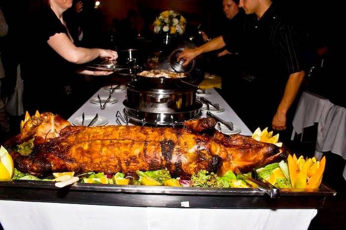
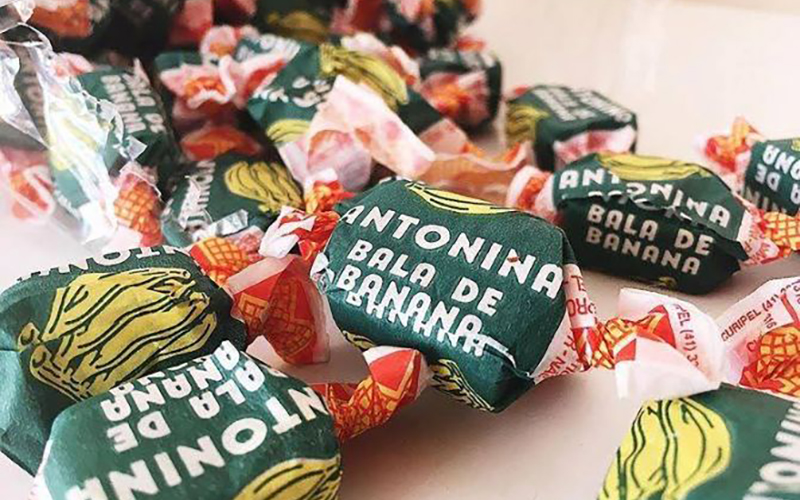

Barreado
O barreado é a comida típica do Paraná mais famosa. Essa carne é cozida até desmanchar na panela de barro é uma das marcas registradas de Morretes, tradicional cidade litorânea do Estado.

Carne de Onça
Subindo a serra e chegando na capital, temos a grande representante da gastronomia de Curitiba: a carne de onça. Esse patrimônio cultural da cidade, inspirado no prato alemão hackepeter, é o pedido certo para o happy hour, combinando muito bem com chopp ou outros drinks.

Porco no Rolete
Não se pode falar em gastronomia do Paraná sem mencionar o porco no rolete. Comida típica do oeste do Estado, especialmente do município de Toledo, esse prato demora horas para ficar pronto, mas a espera vale muito a pena. O preparo consiste em deixar um porco submerso em um tempero de vinhos e especiarias por 10 horas. Em seguida, ele é espetado no rolete e assado na brasa, girando uniformemente entre 6 e 8 horas..
Bala de Banana
Agora, vamos falar de um doce que movimenta a economia do estado, as famosas balas de banana de Antonina. O que começou como uma venda na beira de estrada, em 1979, transformou-se em uma fábrica que une uma receita de doce caseira com produção em escala. Além do docinho da sobremesa, essas balas, produzidas com banana de Guaraqueçaba, ainda podem ser utilizadas no preparo de drinks. Muitos turistas também levam esse produto como souvenir, deixando a lembrança do Paraná, literalmente, mais doce.
Pão no Bafo
Típico dos campos gerais, o pão no bafo foi tombado como patrimônio cultural imaterial do município de Palmeira. A homenagem é muito mais que merecida: a receita é a junção perfeita daquilo que todo mundo gosta: pão e carne. A receita consiste em um pão cozido com uma mistura de carnes regadas a cerveja escura e diversos temperos. Uma tendência gastronômica do estado é preparar esse prato com carne de porco Moura – uma espécie de suíno criado de maneira solta, de sabor inigualável.